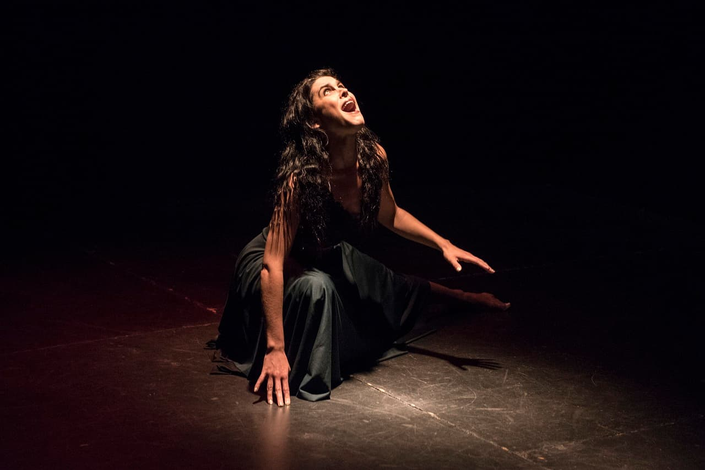
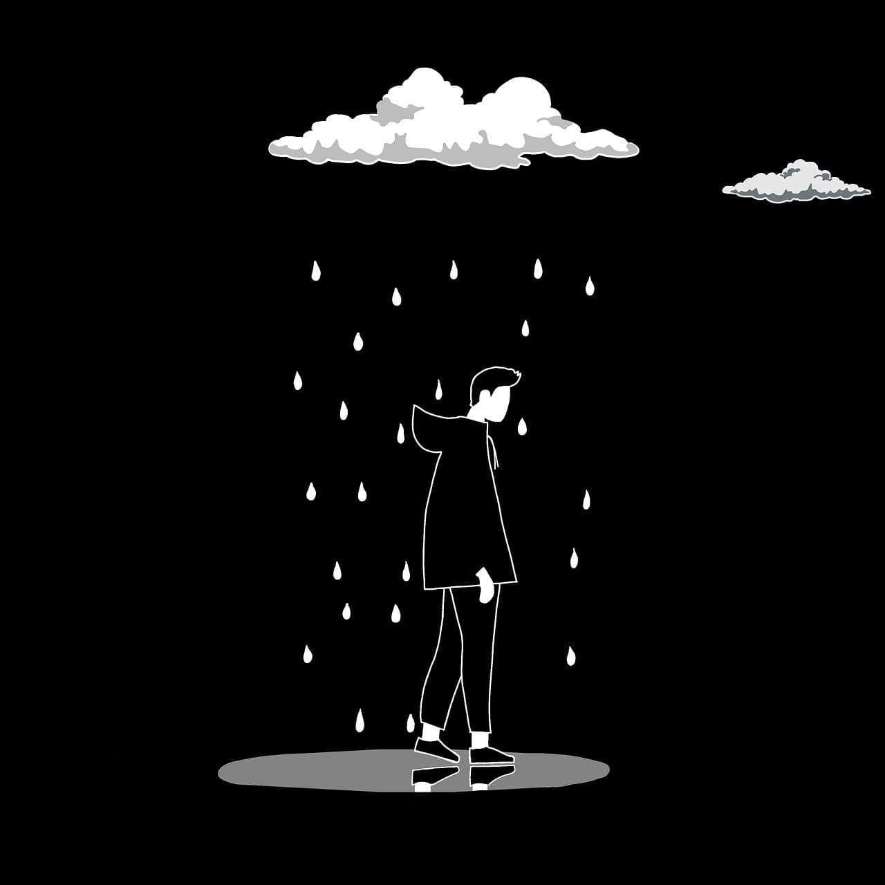
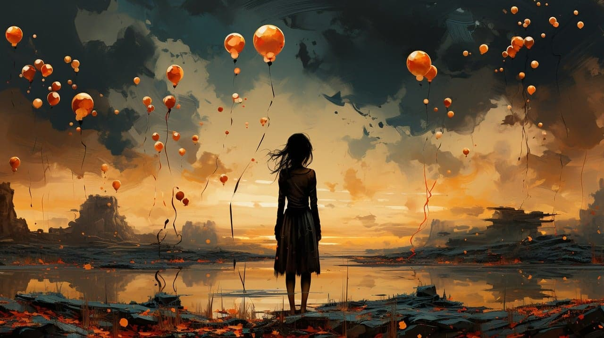

VIIKON ITKU
Lupauksen varjossa
Anna istui vanhalla puisella penkillä vanhan, ränsistyneen talon edustalla. Kesäpäivä oli lämmin, ja ilma tuoksui kukkiville puille ja tuoreelle nurmelle. Hän katseli puutarhaa, joka oli jäänyt hoitamatta – kukkapenkit olivat villiintyneet, ja polut, joita hän oli joskus rakkaansa kanssa kävellyt, olivat ruohottuneet umpeen. Mutta silti kaikki tuntui samalta, vaikkei mikään ollut enää ennallaan. Hänen sormensa puristi hellästi vanhaa, jo lähes haalistunutta kirjeitä täynnä olevaa laatikkoa. Laatikko oli avain hänen sydämensä haavoihin, täynnä lupauksia, unelmia ja rakkautta, joka oli kerran täyttänyt hänen elämänsä. Yksi kirjeistä, jonka kulmat olivat repeytyneet ja muste hiipunut vuosien kuluessa, oli erityinen. Se oli hänen mieheltään, Joonalta – kirje, jonka hän oli saanut viikkoa ennen kuin sota vei hänet mukanaan. Anna avasi kirjeen varovasti, ikään kuin se voisi pirstoutua palasiksi hänen käsissään. Hän tunsi Joonan sanat ennen kuin edes katsoi niitä. "Rakas Anna, älä itke kun luet tätä. Lupaan palata takaisin. Pidä minut aina sydämessäsi, ja minä palaan, kun kukat taas kukkivat puutarhassa ja aurinko paistaa meitä molempia. Me rakennamme vielä yhdessä sen talon, jonka suunnitelmat teimme. Lupaan, ettei mikään voi viedä minua kauas sinusta." Hänen hengityksensä särkyi. Hän muisti ne hetket, kuinka he istuivat iltaisin yhdessä, kuunnellen kevään hiljaista tuulta ja suunnitellen yhteistä tulevaisuutta. Joona oli ollut hänen tukensa, hänen kallionsa. He olivat vannoneet rakkautta toinen toisilleen, aivan kuten lupasivat, että heidän tuleva kotinsa olisi heidän ikuisuutensa symboli. Mutta sitä päivää ei koskaan tullut. Sota nieli Joonan, ja sen mukana katosivat myös ne unelmat, jotka oli kerran piirretty nauraen iltaan auringonlaskun alla. Kuinka monta yötä Anna oli valvonut, odottaen Joonan palaavan, katsoen horisonttiin, toivoen näkevänsä hänen hahmonsa ilmestyvän tutulle polulle. Mutta hän ei koskaan palannut. Nyt, vuosia myöhemmin, Anna oli vanha ja väsynyt. Hänen elämänsä oli kietoutunut muistoihin, ja vaikka maailma hänen ympärillään oli muuttunut, hänen sydämensä pysyi samassa hetkessä, samassa lupauksessa, jonka Joona oli tehnyt. Hänen ainoa lohtunsa oli se ajatus, että jossain toisessa paikassa, toisessa ajassa, he olisivat taas yhdessä. Anna tunsi, kuinka kyyneleet vierähtivät hänen poskilleen. Mutta tällä kertaa ne eivät olleet pelkkää surua – niissä oli myös kiitollisuutta. Hän oli saanut kokea niin syvää rakkautta, että se oli jäänyt elämään hänen mukanaan kaikki nämä vuodet, vaikka Joona ei enää ollut vierellä. Aurinko alkoi laskea hitaasti taivaanrannassa, ja sen kultainen valo valaisi puutarhaa. Hän katsoi kohti kaukaista taivasta ja hymyili heikosti. Kukat kukkivat jälleen, aivan kuten Joona oli luvannut. Ja vaikka lupaus oli jäänyt täyttämättä, Annan sydämessä oli rauha. Sillä hän tiesi, että jonain päivänä, jossain toisessa todellisuudessa, he palaisivat takaisin kotiin – yhdessä.


